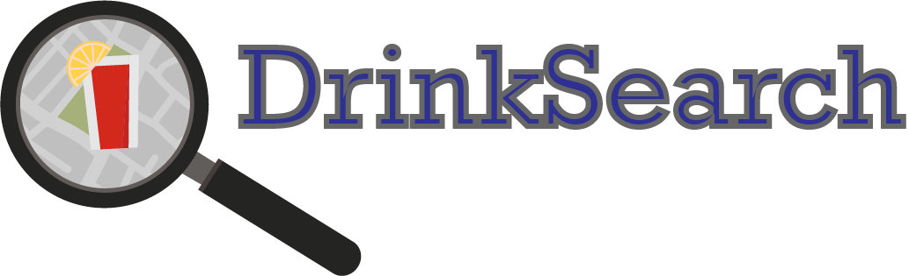

<ion-header>
  <ion-navbar>
    <ion-title>Drink Search</ion-title>
  </ion-navbar>
</ion-header>

<ion-content class="background" padding>

 

  <ion-list  class="animated bounceInUp"  >
      <button ion-button full color="primary" style="margin-top: 20px;" type="submit" (click)="activarManejo()">Buscar pasajeros</button>
      <button ion-button full color="primary" style="margin-top: 20px;" type="submit" (click)="desactivarManejo()">Dejar de buscar</button>
    </ion-list>
</ion-content>
